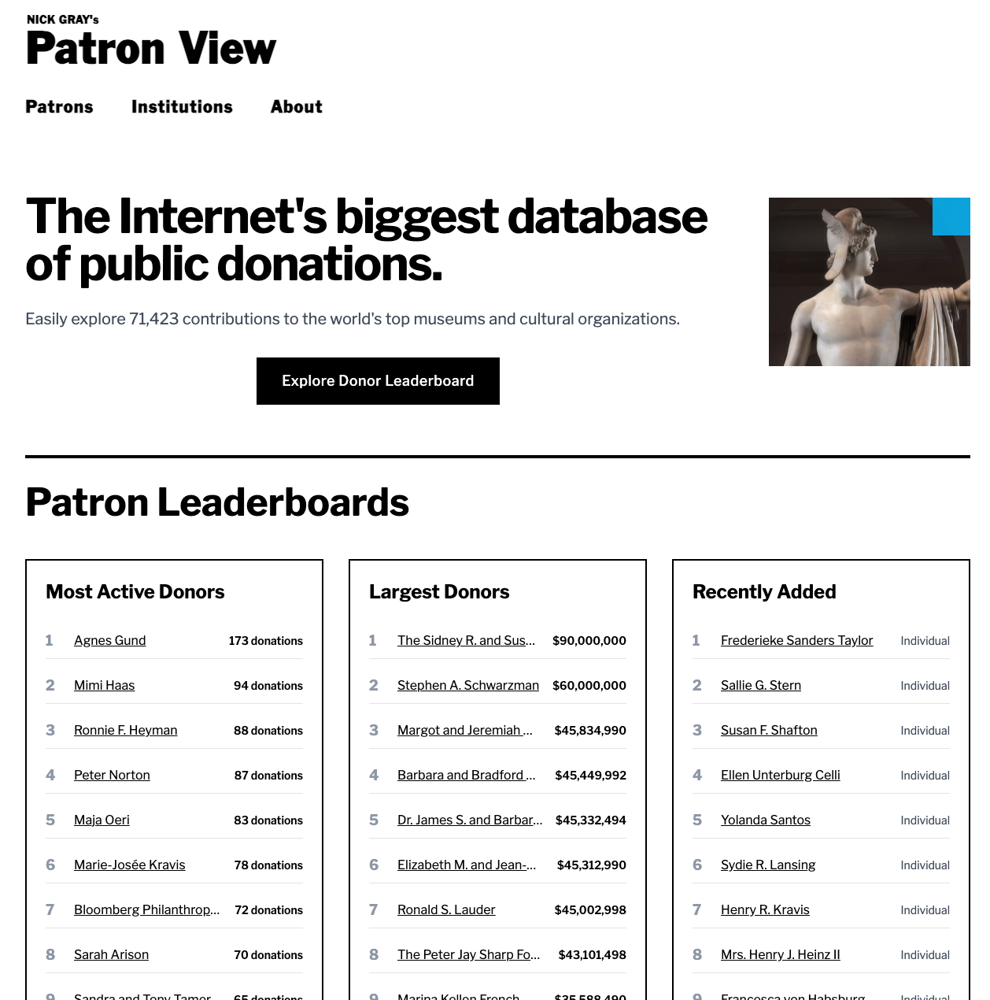

AI Consulting
AI Consulting for Small Businesses
Put Claude to work on the tasks slowing your team down. We set up AI tools, connect your business software, and automate repetitive work — backed by 12+ years of hands-on IT experience.
What We Do
Claude Setup, Automation & Training
Start with one task: processing documents, drafting support replies, updating a CRM, or helping your team use Claude. We plan, build, test, and hand over a workflow your business can maintain.
AI Strategy & Roadmapping
We assess your operations, identify high-impact AI opportunities, and build a practical roadmap — so you invest in what actually moves the needle.
Claude Implementation
From API integrations to custom Claude-powered tools, we build production-grade solutions tailored to your specific workflows and data.
Explore claude implementationTeam Training & Enablement
Get your team up to speed on using Claude effectively. We deliver hands-on training, prompt engineering workshops, and ongoing support.
Explore team training & enablementWorkflow Automation
Eliminate repetitive tasks by connecting Claude to your existing tools — CRMs, helpdesks, document systems, and more. Less manual work, fewer errors.
Explore workflow automationCode Modernization
Migrate legacy codebases, reduce technical debt, and modernize your software stack using AI-assisted development tools and practices.
AI Safety & Governance
Deploy AI responsibly with proper guardrails, data handling policies, and compliance frameworks your leadership team can trust.
Our Work
Built & Shipped
An example of the software and data workflows we build. Explore the project and the kind of work behind it.

PatronView
A public donations database for museums and cultural organizations. The project combines AI-assisted PDF data extraction, searchable donation records, interactive donor leaderboards, and a serverless architecture on Cloudflare.
Our Process
Simple, Transparent, Effective
No black boxes. No buzzword bingo. Here's exactly how we work with you.
Discovery
We learn your business inside and out — your processes, pain points, tools, and goals. This isn't a sales call, it's a working session.
Strategy
We identify where AI will have the biggest impact and build a prioritized plan. We agree on the scope, cost, and success criteria before implementation.
Build & Deploy
We implement solutions iteratively — starting with quick wins so you see value fast, then scaling to larger initiatives.
Support & Optimize
AI gets better over time. We monitor performance, train your team, and continuously refine so your investment keeps compounding.
Why Helios AI
Hands-on IT Experience, Practical AI Delivery
AI needs to fit the tools, people, and processes your business already relies on. We help you choose one useful starting point and carry it through implementation.
With 12+ years of hands-on IT experience — from infrastructure and networking to software development and business operations — we understand the real-world systems AI needs to plug into.
We specialize in Claude by Anthropic, from team setup and training to custom integrations. We choose the tools and safeguards that fit your workflow.
- Production-grade implementations, not just demos
- Deep IT infrastructure knowledge
- Claude & AI expertise
- Transparent pricing — no surprise invoices
- Ongoing support, not one-and-done projects
Fast Time to Value
Start with one useful workflow. We agree on the timeline and deliverables before building.
Proven Expertise
12+ years building and managing IT systems for businesses of all sizes.
Safety-First AI
Human review, clear data handling, and tested workflows are part of implementation.
Before you get started
Is AI consulting a good fit for a small business?
It can be when a recurring task takes time and has a clear result you can check. Good starting points include document processing, support drafts, and moving information between tools. We start with your workflow and help decide whether AI or a simpler automation makes sense.
Do we need an in-house developer?
No. We can handle setup and implementation, explain how the workflow works, and train the people who will use it. If a custom integration needs ongoing maintenance, we discuss that before building.
How much does a project cost?
Pricing depends on the workflow, integrations, and training involved. After discovery, we propose a scope and quote. AI subscriptions, usage charges, and any ongoing support are discussed separately so you can assess the full cost.
What happens after I send an inquiry?
We follow up by email to learn about your task, current tools, and goals, then arrange a discovery call if the project looks like a fit. Sending an inquiry doesn't book a time or commit you to a project.
What would you like to take off your team's plate?
Tell us about one repetitive task and the tools you use. We'll follow up by email to discuss whether AI is a good fit and arrange a free discovery call. No commitment required.
Or write to hello@heliositservices.com. Include your company, the task you'd like to improve, and the tools you use.